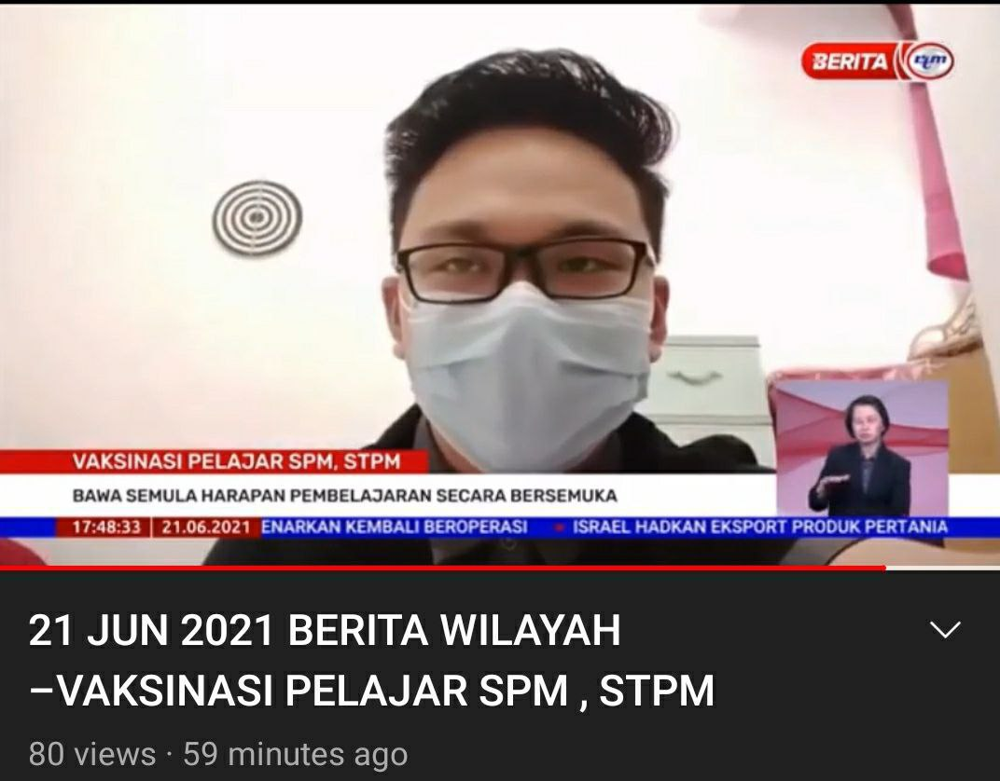
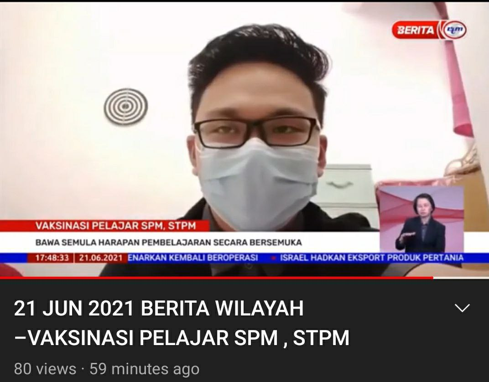
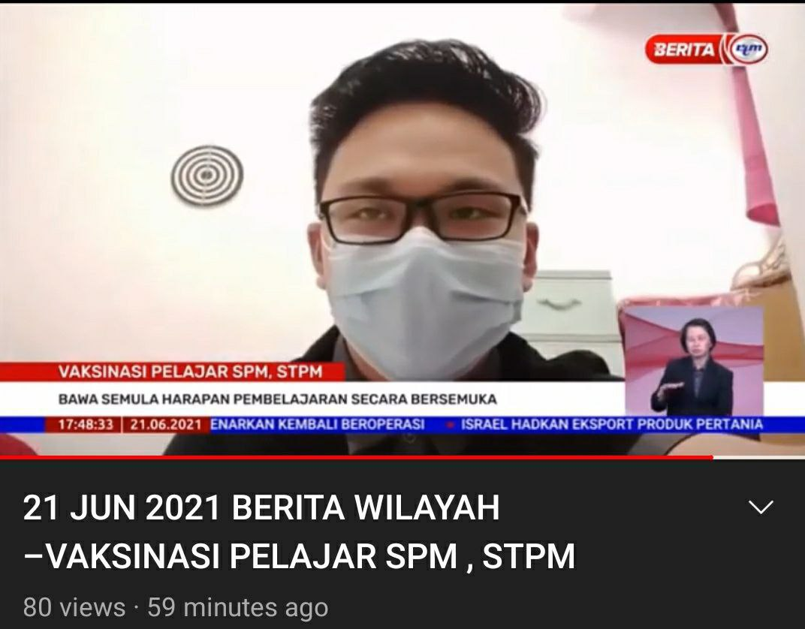

ABOUT ME
MY BIODATA
My Experience
I have a little bit experience before this. I took up the position as head of the school superintendent in 2020 and also provided comments regarding covid 19 under RTM
 

I have a little bit experience before this. I took up the position as head of the school superintendent in 2020 and also provided comments regarding covid 19 under RTM
